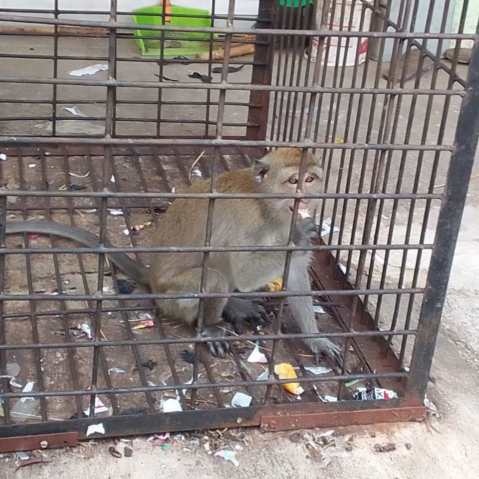

Cileungsi, 24 Mei 2024 -Perumahan Cileungsi Indah kini menjadi sorotan publik berkat kehadiran yang tak biasa: seorang pemilik monyet peliharaan yang membawa keceriaan ke dalam lingkungan tersebut. Fenomena ini telah menarik perhatian warga sekitar dan menyulut perdebatan tentang hewan peliharaan di perumahan. Monyet peliharaan yang akrab disapa Koko adalah sahabat setia bagi pemilik monyet tersebut. Salah seorang penghuni perumahan. Monyet itu sering kali terlihat diluar rumah yang berkandang kan besi. Menurut pemiliknya, Koko menarik perhatian dengan tingkah polahnya yang lucu dan menggemaskan. Kehadiran Koko telah memicu campuran perasaan di antara warga. Sebagian besar menganggapnya sebagai tambahan yang menyenangkan dan unik bagi komunitas, sementara yang lain merasa cemas akan potensi gangguan dan risiko yang mungkin ditimbulkannya. "Ibu Susi, seorang warga perumahan, menyatakan, "Anak-anak senang sekali bermain dengan Koko, dan dia juga menjadi hiburan bagi para tetangga yang lewat." Namun, beberapa tetangga mengungkapkan kekhawatiran terhadap keamanan dan kenyamanan umum. Mereka merasa bahwa memelihara monyet di perumahan bisa menjadi masalah, terutama karena potensi gangguan dan risiko kecelakaan yang mungkin timbul. Dalam menghadapi kekhawatiran tersebut, Pemilik tersebut menegaskan bahwa Koko telah menjalani pelatihan yang baik dan dia selalu memastikan agar tidak ada gangguan yang ditimbulkan oleh Koko kepada warga sekitar. " Koko adalah bagian dari keluarga kami, dan kami bertanggung jawab sepenuhnya terhadap perilakunya," ungkapnya. Walaupun terjadi perdebatan di sekitar kehadiran Koko, tak bisa disangkal bahwa kehadirannya telah menambah semarak dan keceriaan di perumahan tersebut. Sebagai simbol kasih sayang dan keharmonisan, Koko menjadi ikon kehangatan dan kebersamaan di tengah-tengah komunitas perumahan di Cileungsi Indah. Perkembangan lebih lanjut terkait kehadiran Koko di Perumahan Cileungsi Indah akan terus dipantau oleh warga sekitar serta otoritas setempat untuk memastikan keamanan dan kenyamanan bagi semua pihak yang terlibat.
